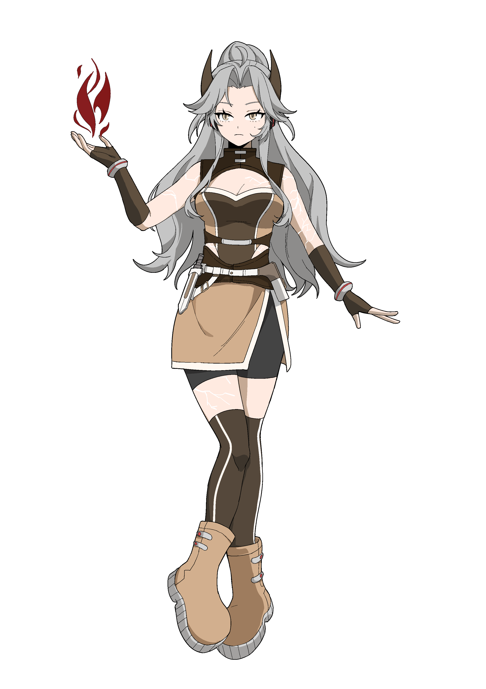

Shinzaki Tooru

| 姓名 | 心崎透 |
|---|---|
| 日文名稱 | しらくも おぼろ |
| 英雄名 | 蝕影魔女 |
| 學校 | 雄英高中英雄科 |
| 生日 | 2000/12/13 |
| 星座 | 天蠍座 |
| 喜愛的事物 | 牛奶糖 三色團子 |
| 個性 | 心念操控，擁有強大的心靈感應與念動力，能夠使用精神力量感知，透過心靈感應與精神操縱「念」的力量。 |
心崎透，心崎家族的終焉。
自幼被根津收養，於雄英中成長，並以「A班推薦入學者之一」的身份進入雄英高中。在學生時期，與「A班三傻」關係深厚，並與香山睡結為摯友。
小時候親眼目睹父親殺害母親，這件事對她造成了深刻的創傷。
根津收養她後，將她帶回雄英並讓她上學。三年級時，她不小心使用「個性」將同學的寵物貓殺死，這使她徹底封閉自己。
為了保護她，根津請來擁有「封印」能力的英雄將她的「個性」封印，只留下基本的戰鬥與防守能力。那位英雄不久後去世，隨著時間的流逝，封印逐漸變薄。